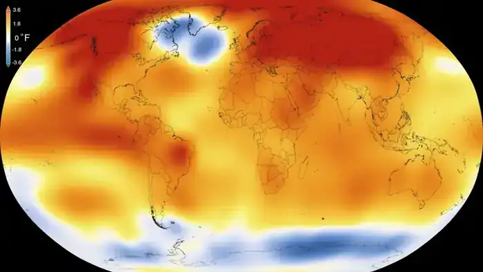
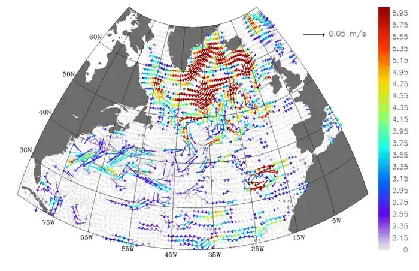
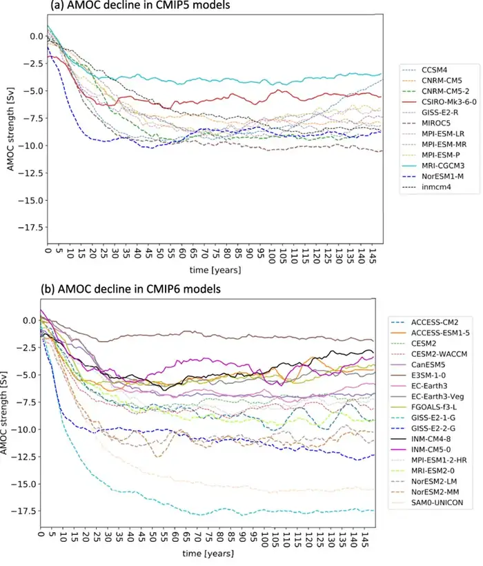
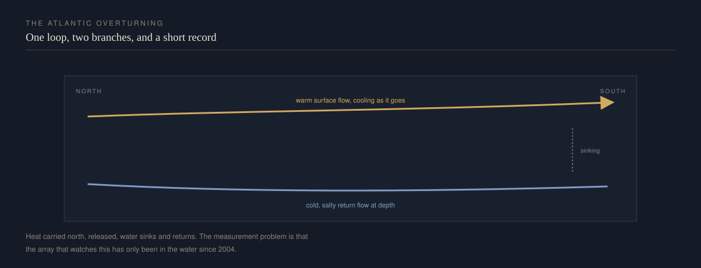

What AMOC is
The Atlantic meridional overturning circulation moves warm surface water north, where it cools, sinks, and returns south at depth. It carries a large fraction of the heat that keeps north-west Europe milder than its latitude suggests.
Maps, diagrams and images






Direct monitoring began in 2004 with the RAPID array of moorings across 26.5°N. Before that, estimates come from proxies — sediment, corals, ice cores — with much larger uncertainties.
The evidence of weakening
The RAPID record shows variability but no unambiguous trend over its short length. Proxy reconstructions suggest a weakening since the mid-twentieth century, and one widely cited reconstruction (Caesar et al., 2021) concluded the circulation is at its weakest in a millennium.
Model projections under high emissions consistently show weakening. A 2023 study (Ditlevsen & Ditlevsen) applied statistical early-warning analysis to a proxy record and concluded collapse could occur around mid-century — a conclusion contested by other specialists who note the proxy's limits and the short observational baseline.
Very likely: AMOC will weaken over the twenty-first century under continued warming.
About collapse: the IPCC assesses an abrupt collapse before 2100 as unlikely, with low confidence — not impossible, and not well constrained, because the models that would show it have biases and coarse resolution.
The stakes: a collapse would cool the North Atlantic region, shift tropical rain belts, and raise sea level on the US east coast faster. Even the weakening, without collapse, matters for regional climate.
The honest position: a low-probability, high-impact outcome, where the probability is poorly known and the observations are too short to settle it.
Why it is in the archive
Because it is a case where 'the science is settled' and 'scientists warn of collapse next year' are both wrong, and where the correct answer involves confidence levels that do not fit a headline.
Related: other places where a measurement's uncertainty is the story.
What would change the label
A proxy record that agrees with the RAPID array over its overlap period, and then extends the trend backwards with independent dating, would convert a contested reconstruction into a measurement. The current proxies — sortable silt, benthic foraminiferal isotopes, coral records — disagree with each other in the twentieth century, which is the decade where the argument matters.
The other test is model resolution. The models that produce an abrupt collapse are the ones that resolve the overflow over the Greenland–Scotland ridge; the coarse models that cannot, do not. A high-resolution ensemble that reproduces the present circulation and then collapses would be evidence. One that reproduces the present circulation and does not would be evidence the other way.

Sources for this page
- Wikipedia, “Atlantic meridional overturning circulation” — structure and trendsen.wikipedia.org
- Caesar et al. (2021), Nature — weakest circulation in a millenniumdoi.org
- IPCC AR6 WG1, Chapter 9 — ocean, cryosphere and sea levelwww.ipcc.ch
- RAPID array — continuous AMOC observations at 26.5°Nwww.rapid.ac.uk
Open resources on this topic
- PapersOpen-access articles: DOAJ · PubMed Central · Internet Archive Scholar
- BooksPublic-domain and borrowable copies: Open Library · Project Gutenberg · Google Books · Internet Archive
More images
Cite this page
Momin, S. (2026). AMOC Tipping. The Larger World Archive. https://drsamonline.github.io/LARGE_GLOBE/amoc.htmlMomin, Sohil. “AMOC Tipping.” The Larger World Archive, 2026, https://drsamonline.github.io/LARGE_GLOBE/amoc.html.Momin, Sohil. “AMOC Tipping.” The Larger World Archive, 2026. https://drsamonline.github.io/LARGE_GLOBE/amoc.html.@misc{amoc2026amoc,
author = {Momin, Sohil},
title = {AMOC Tipping},
year = {2026},
howpublished = {The Larger World Archive},
url = {https://drsamonline.github.io/LARGE_GLOBE/amoc.html},
note = {Last reviewed 20 November 2026}
}Last reviewed 20 November 2026 · Corrections policy · this page is not peer reviewed